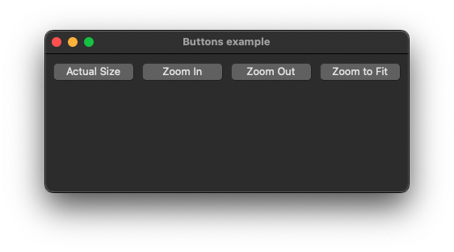

|
xtd
0.2.0
|
Loading...
Searching...
No Matches
buttons.cpp
demonstrates the use of xtd::forms::buttons button object collection.
- Windows
- macOS

- Gnome
#include <xtd/forms/application>
#include <xtd/forms/buttons>
#include <xtd/forms/form>
using namespace xtd::forms;
auto main() -> int {
auto actual_size_button = buttons::actual_size(main_form, {10, 10}, {100, 25});
auto zoom_in_button = buttons::zoom_in(main_form, {120, 10}, {100, 25});
auto zoom_out_button = buttons::zoom_out(main_form, {230, 10}, {100, 25});
auto zoom_to_fit_button = buttons::zoom_to_fit(main_form, {340, 10}, {100, 25});
application::run(main_form);
}
static void run()
Begins running a standard application message loop on the current thread, without a form.
static button actual_size()
Create a system-defined button that represent actual_size button.
static button zoom_out()
Create a system-defined button that represent zoom_out button.
static button zoom_in()
Create a system-defined button that represent zoom_in button.
static button zoom_to_fit()
Create a system-defined button that represent zoom_to_fit button.
The xtd::forms namespace contains classes for creating Windows-based applications that take full adva...
Definition texts.hpp:219
Represents an ordered pair of integer x- and y-coordinates that defines a point in a two-dimensional ...
Definition point.hpp:54
Generated on Sun Jun 15 2025 13:53:53 for xtd by Gammasoft. All rights reserved.